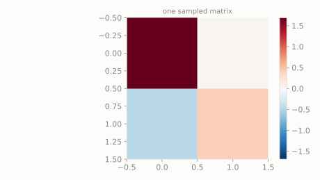

Instead of one dart-throwing robot, picture a 2x2 grid of them, where robots in the same row tend to wobble together, and robots in the same column also tend to wobble together.
What does one random snapshot of the whole grid's wobble look like?
scipy.stats.matrix_normal
Multivariate Normal stretched across a whole grid instead of a single vector: every cell in a matrix wobbles Normally, with separate covariance structure for how rows relate to each other and how columns relate to each other.
| parameter | default used here | meaning |
|---|---|---|
mean | [[0, 0], [0, 0]] | mean matrix |
rowcov | [[1, 0], [0, 1]] | covariance between rows |
colcov | [[1, 0], [0, 1]] | covariance between columns |
Instead of one dart-throwing robot, picture a 2x2 grid of them, where robots in the same row tend to wobble together, and robots in the same column also tend to wobble together.
What does one random snapshot of the whole grid's wobble look like?
scipy.statsimport scipy.stats as stats
import numpy as np
dist = stats.matrix_normal(mean=np.zeros((2, 2)), rowcov=np.eye(2), colcov=np.eye(2))
sample = dist.rvs(random_state=0)
print('one sampled 2x2 grid:')
print(np.round(sample, 3))